Vanderbilt · The AI-enabled Education Series · facilitator guide · print edition
Slides, Faster, the facilitator guide

Run of show
| Page | Time |
|---|---|
| Run this course | Before class |
| Welcome | Full 2 min · Core 2 |
| The Chancellor’s charge | Full 3 min · Core: under 1 |
| The evidence | Full 4 min · Core 2 |
| The method | Full 6 min · Core 5 |
| Example: leadership update | Full 8 min · Core 7 |
| Example: training deck | Full 3 min · Core: skip |
| Example: workshop talk | Full 4 min · Core: skip |
| Guardrails | Full 4 min · Core 3 |
| Practice now | Full 8 min · Core 4 |
| Knowledge check | Full 3 min · Core: skip |
| Recap | Full 3 min · Core 2 |
| Appendix | As needed · Core: skip |
| Total | Full 48 min · Core 25 min |
A week before · Learn it as a learner first
- Run both editions end to end, this one and the learner classroom edition, doing every exercise, including typing a real brief into the practice builder.
- Write your own CRIT brief for a real deck you owe someone, run it, and polish what comes back. In the session you'll say you've done it, so have done it.
- Find out whether your account has Copilot in PowerPoint. If it does, rehearse the live outline build there; if not, rehearse it in Amplify in a browser tab. Either works on stage.
- Decide your path now: Full (48) or Core (25). The rail carries both timings on every page.
- Rehearse the leadership-update build out loud. You will brief and generate that deck live in front of the room, so run it alone first and practice cutting what comes back.
The day before · Test the room end to end
- Test the projector with this facilitator link and confirm the script rail is readable from where you'll stand.
- Scan the welcome QR from the back of the room. It must land on the learner classroom edition, not this page.
- Log in to PowerPoint with Copilot if you're licensed, or leave Amplify open in a browser tab. The live build on the update page depends on one of them.
- Print a few one-page takeaways (the Print button on the practice page) for anyone without a device.
- Re-read your tough-questions bank and say the answers out loud: “our slides have to be on brand,” “can it make charts from our data,” “is it cheating to present AI slides,” “what about confidential numbers.”
30 minutes before · Set the stage
- Welcome page up (the next page, with the QR) as people arrive, so scanning starts before you do.
- Close every other tab and silence notifications on the machine that's projecting.
- Test the arrow keys, the copy buttons, and one run of the update prompt in your logged-in tool.
- Write PARKING LOT on the whiteboard. Policy questions you can't answer go there with a name, and you follow up by email.
Materials · What has to be in the room
- Projector with this facilitator edition open.
- Facilitator laptop with PowerPoint (Copilot) or Amplify logged in for the live build.
- Learner devices, joining through the welcome QR into the classroom edition.
- A few printed takeaways for people without a device.
- Whiteboard or flip chart for the parking lot and the backup URL.
Pre-work invite (copy and paste)
Subject: Slides, Faster · [day], [time], [room] Hi everyone, On [day] at [time] in [room] we’re running Slides, Faster, a short session from The AI-enabled Education Series on building decks with AI. You’ll leave with a three-step method and three deck prompts you can use the next morning. Two things before you come: 1. Bring a phone or laptop. You’ll follow along on your own screen. 2. Sign in to ChatGPT EDU or Amplify once with your Vanderbilt account, so login isn’t the first thing you do in the room. Bring one real deck you have to give this term. Nothing you type in the session is collected or sent anywhere. See you there, [Your name]
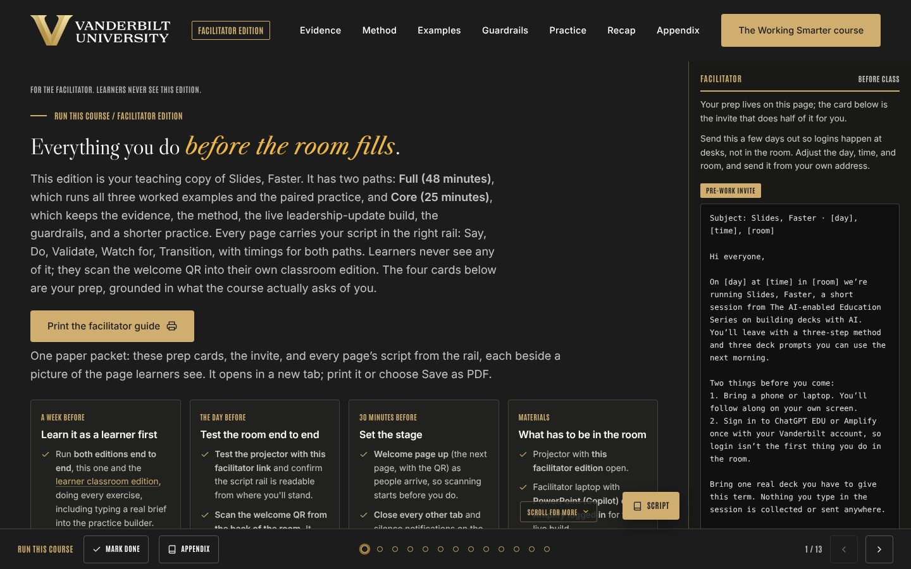
Run this course Before class
Your prep lives on this page; the card below is the invite that does half of it for you.
Send this a few days out so logins happen at desks, not in the room. Adjust the day, time, and room, and send it from your own address. The invite text is on the first page of the facilitator edition and in the printed packet below.
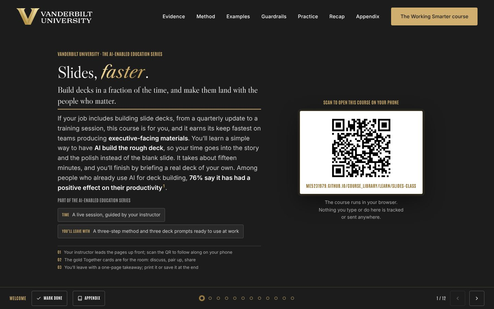
Welcome Full 2 min · Core 2
Get every device into the learner edition and set the deal for the session.
Say
“This is Slides, Faster, part of The AI-enabled Education Series. In this session you’ll learn a three-step way to have AI build the rough deck while you own the story and the polish. Scan the QR and the course opens on your phone. Everything I do up here, you can do down there.”
Do
- Have this page projected as people arrive; the QR does its work before you start talking.
- Give the room two minutes to scan and open the course; the whiteboard URL is the backup.
- Point out the bottom-bar arrows so people can follow along page by page.
- Say plainly that nothing they type is stored or sent anywhere.
Validate: 80%+ of the room has the course open on a phone or laptop before you turn the page.
Watch for: Guest wifi stalls and half the room can’t load it. Point at the URL on the whiteboard, ask people to share a neighbor’s screen, and keep moving; don’t troubleshoot wifi in front of thirty people.
Transition: “Before the numbers, one page on why the university cares how your decks get made.”
Core path: Same page, same two minutes. The clock savings come later.
The Chancellor’s charge Full 3 min · Core: under 1
Connect the method to the Chancellor’s vision so deck craft lands as institutional strategy, not cosmetics.
Say
“One page on why the university cares how your decks get made. The Chancellor’s vision has no hedge in it: Vanderbilt will define the great university of the 21st Century and be it, operating at uncommon speed, agility, and scale. Our motto has always been the dare, Crescere aude, dare to grow, and a dare that size gets pitched in rooms, one deck at a time. Story, build, polish is how those decks get made without eating your week.”
Do
- Read the vision sentence from the screen word for word; don’t paraphrase the one sentence the page exists for.
- Walk the three focus cards left to right, one sentence each, and land on the At-your-desk lines.
- Point at the flywheel card and trace the loop out loud: reputation attracts talent, funding, partnerships, and access, which build the reputation.
- Hold it to three minutes; this page frames the course, it is not the course.
Validate: Ask “what does a checked, one-idea-per-slide deck have to do with reputation?” and hear some version of: the room judges the institution by what it shows them.
Watch for: Eye-rolls at strategy talk. Don’t argue for the vision; point out the next page is evidence, not aspiration, and keep moving.
Transition: “That’s the why. Now the numbers that say the time savings are real.”
Core path: 25-min core: under a minute. Read the vision sentence, gesture at the three focuses, and move on.
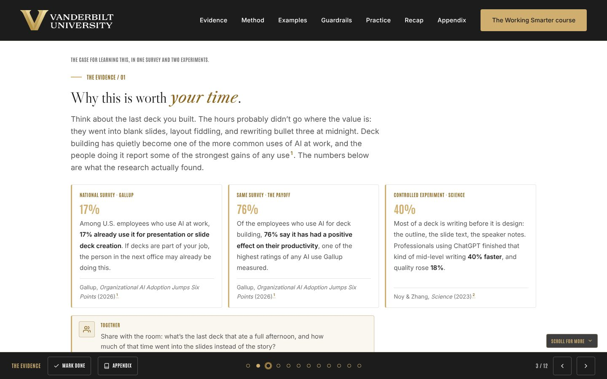
The evidence Full 4 min · Core 2
Ground the method in the survey and the experiments so it lands as research, not enthusiasm.
Say
“Think about the last deck that ate a full afternoon. Most of that time went into slides, not the story. Gallup found 17 percent of employees who use AI at work already use it for deck building, and 76 percent of them say it has a positive effect on their productivity. And most of a deck is writing, where a controlled experiment measured a 40 percent speedup.”
Do
- Project the three evidence cards and give each one sentence, not a lecture.
- Run the gold Together card: ask for the last deck that ate a full afternoon and where the time went.
- Take two or three answers out loud; the stories do the persuading.
- Mention that every number is cited in full on the Appendix page, one tap away in the bottom bar.
Validate: At least two people share a real lost-afternoon deck story with the room.
Watch for: Someone challenges the numbers. Don’t defend from memory: jump to the Appendix, show the citation, and offer to talk after. The course survives skepticism; improvised statistics don’t.
Transition: “Here’s the method those numbers point to. It fits on one page.”
Core path: 25-min core: skip the share-out. State the 76% finding in one sentence and turn the page.
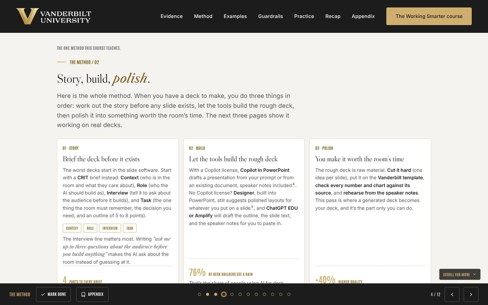
The method Full 6 min · Core 5
Teach Story, Build, Polish and the CRIT brief. This is the one page they must remember.
Say
“The whole method is three steps in order. Story: brief the deck with CRIT before any slide exists, covering who is in the room, the one thing they must remember, the decision you need, and a five-to-eight-point outline. Build: let the tools produce the rough deck. Polish: you cut it, put it on the template, check every number, and rehearse. The Interview line matters most: ‘ask me up to three questions about the audience before you build anything.’”
Do
- Walk the three cards left to right, spending most of your time on the Story card.
- Read the four CRIT chips out loud and say in one line what each one buys you.
- Name the two build paths out loud: Copilot in PowerPoint if licensed, otherwise Designer plus ChatGPT EDU or Amplify.
- Run the Together card: pairs explain Story, Build, Polish back to each other in under a minute.
- Run the Cut it hard drill on the projector: the room calls out four cuts, you press Compare, and you read the exemplar’s reasons aloud.
- Point at the gold rule strip and read it word for word: the AI builds the rough deck, and you make it worth the room’s time.
Validate: Cold-call one pair afterward: they can name the three steps and say what the Interview line does.
Watch for: People treating Polish as optional cleanup. Say now that the quality gain in the studies came from the human pass, and that the live build on the next page will prove it.
Transition: “Enough theory. Let’s brief a real deck together and watch the outline appear.”
Core path: 25-min core: keep everything but the pair activity. Name the steps yourself, then cold-call one person.
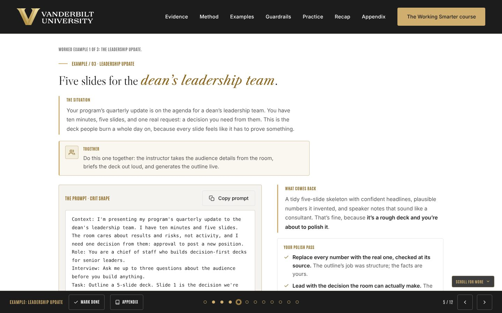
Example: leadership update Full 8 min · Core 7
The live build: the room briefs the deck together and watches the outline generate.
Say
“Here’s the situation: ten minutes with the dean’s leadership team, five slides, one decision to ask for. We’re going to brief this deck together and run the brief live. You tell me who’s in the room and what they care about, and whatever comes back, we cut it together.”
Do
- Read the situation from the page, then take audience details from the room and edit the Context line out loud before you run anything.
- Run the brief live in PowerPoint with Copilot if you’re licensed, otherwise in Amplify, and answer its interview questions with the room’s answers.
- Read the outline back and ask what they’d cut; make two or three of the room’s cuts on screen.
- Map what just happened onto the polish list: real numbers checked at source, the decision the room can actually make, one idea per slide.
Validate: The room offers at least two cuts or corrections without you pulling them out one by one.
Watch for: The outline comes back bland or wrong. Don’t apologize and don’t re-run it. Label it a rough deck and polish it live; a flawed draft fixed in front of the room is the lesson, not a failure of it.
Transition: “That was a deck built from nothing. Now one built from something you already have.”
Core path: 25-min core: keep the live run; it’s the heart of the session. Take one cut from the room instead of three.
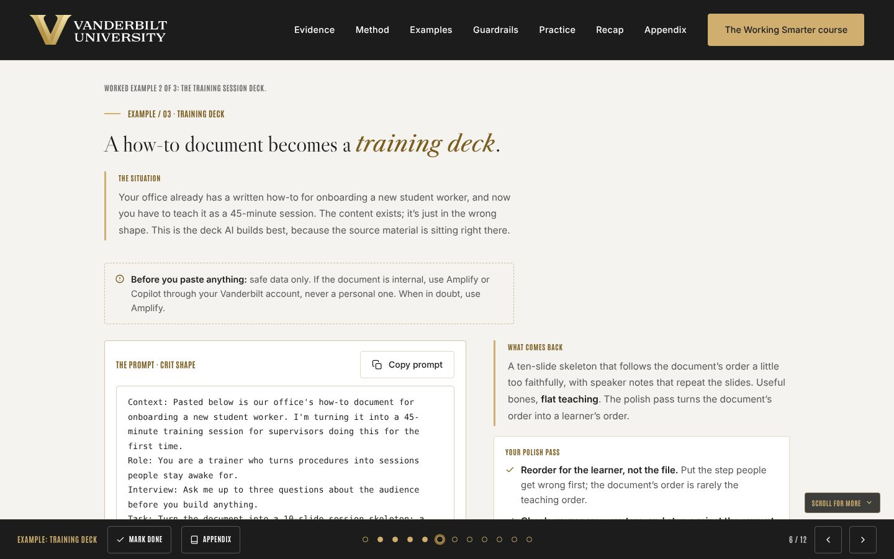
Example: training deck Full 3 min · Core: skip
Show the from-a-document path: the deck is hiding inside a file you already have.
Say
“Your office already wrote the how-to; the training deck is hiding inside it. With a Copilot license you point PowerPoint at the file and it drafts the deck, speaker notes included. Without one, you paste the document into Amplify. Either way the skeleton comes back in a minute, and your job becomes teaching order, not typing.”
Do
- Give the situation in one breath and project the prompt; don’t run this one live.
- Open the fictional onboarding document and show how it buries its two judgment calls in the last paragraph.
- Walk the polish pass and land on “reorder for the learner, not the file” as the step no tool can do.
- Point at the greyed ChatGPT EDU card and say the reason out loud: internal documents stay in Amplify or Copilot.
Validate: Ask “which tool takes an internal how-to?” and hear Amplify or Copilot back from the room.
Watch for: The temptation to run a second live demo. Two live runs this early drains the clock; narrate this one from the page and save the live energy for practice.
Transition: “Both of those were internal. Last one: a public talk, where the fastest tool wins.”
Core path: 25-min core: skip this page. As you leave the live build, say the takeaway carries two more worked prompts, a training deck and a public talk.
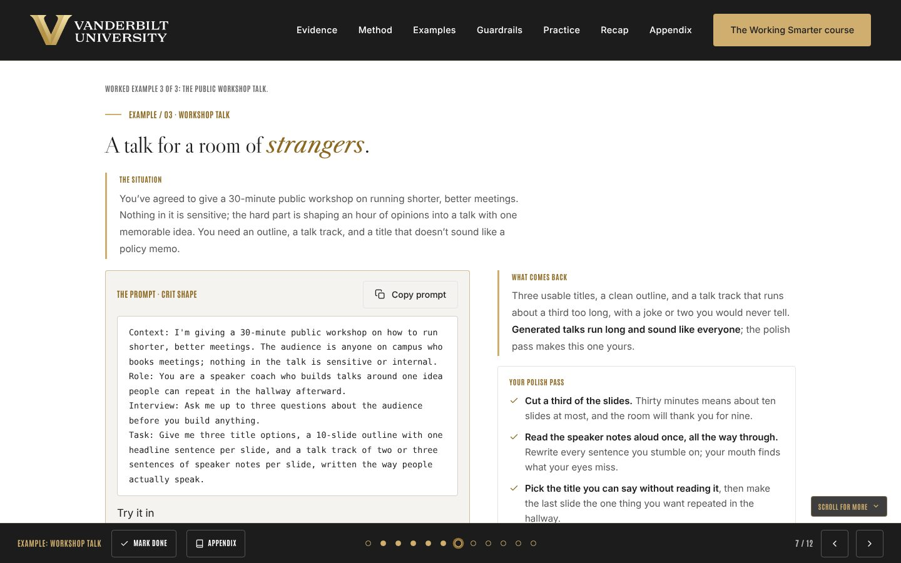
Example: workshop talk Full 4 min · Core: skip
The third example flips the data rule: public content opens up the fastest tool.
Say
“A thirty-minute public workshop, nothing sensitive, so ChatGPT EDU is the fastest way in. And notice the polish pass: cut a third of the slides and read the notes aloud once. Generated talks run long and sound like everybody; the cut and the read-aloud are what make it yours.”
Do
- Give the situation in one breath and show the prompt asking for three titles, an outline, and a talk track.
- Ask the room why ChatGPT EDU is fine here when it sat out the last two examples.
- Point at the cut-a-third line and the read-it-aloud line in the polish pass.
- Remind them slides support the talk: the last slide is the one sentence they want repeated in the hallway.
Validate: Someone answers “because it’s public content” without you saying it first.
Watch for: A which-tool-is-best debate. Close it with the rule: the data picks the tool, and taste picks the rest.
Transition: “Three decks, one pattern. Before you build your own, four rules that keep it safe.”
Core path: 25-min core: skip this page. The guardrails page carries the safe-data rule on its own.
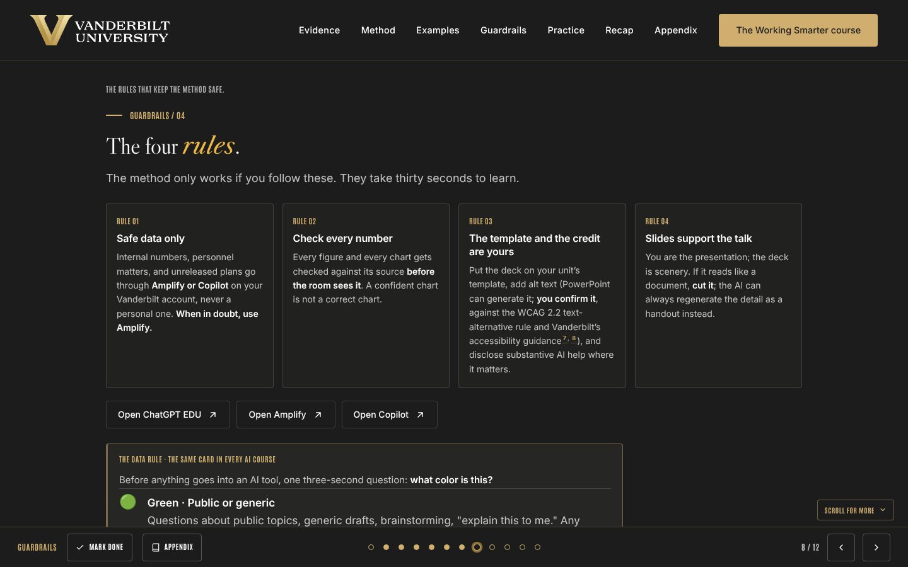
Guardrails Full 4 min · Core 3
Make the four rules stick, especially safe data, before anyone builds a deck of their own.
Say
“Four rules, thirty seconds each. Safe data only: internal numbers, personnel, and unreleased plans go through Amplify or Copilot on your Vanderbilt account, and when in doubt, Amplify. Check every number against its source before the room sees it; a confident chart is not a correct chart. The template and the credit are yours: your unit’s template, alt text you confirm, and disclosure where it matters. And slides support the talk: if the deck reads like a document, cut it.”
Do
- Project the four cards and read each headline; add one sentence each, not a paragraph.
- Take the four questions this page always raises, with the answers you rehearsed: on brand (the polish step puts it on your template), charts from our data (yes, on the Vanderbilt account, checked at source before the room sees them), is it cheating (the story and the judgment are yours; disclose substantive help where it matters), confidential numbers (Amplify or Copilot, or nowhere).
- On rule one, ask the room for examples of “internal” from their actual decks.
- Show the three tool buttons and name the default this room should use.
Validate: Ask “unreleased enrollment numbers need chart slides; where do they go?” and hear Amplify or Copilot, or nowhere.
Watch for: A policy question you can’t answer, like a specific data class. Don’t guess at policy. Put it on the parking lot with a name next to it and follow up by email.
Transition: “Those are the rules. Now the part that makes this course stick: you brief a real deck.”
Core path: 25-min core: cut the room examples. Read the four rules and run the one enrollment-numbers check question.
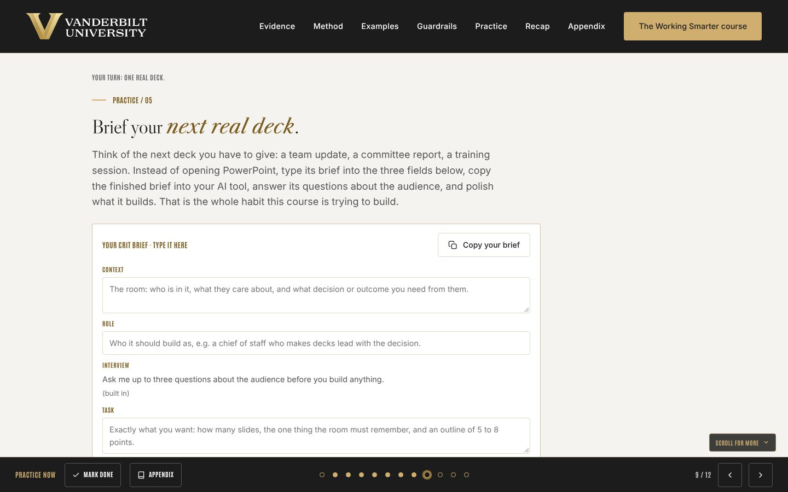
Practice now Full 8 min · Core 4
Everyone leaves having briefed a real deck of their own. This page is the course.
Say
“Think of the next deck you actually have to give. Don’t build it; brief it. Pair up: interview your partner about their room and fill in the three fields for them, then swap outlines and cut each other’s to five slides. In eight minutes we vote on the best one-sentence takeaway in the room.”
Do
- Put the builder on the projector and walk the three fields once, fast.
- Pair the room; an odd person joins a pair as a second interviewer.
- Circulate while pairs type on their own devices; nudge vague Task lines toward a slide count and the one thing to remember.
- Debrief: pairs swap and cut each other’s outline to five slides, then the room votes on the best one-sentence takeaway.
Validate: Every pair has all three fields filled on at least one device before the swap.
Watch for: The “my decks are all data” person. The brief still works for a data deck; the data just has to enter through Amplify or Copilot, and every chart gets checked before the room sees it.
Transition: “You’ve each briefed something real. Three quick questions to prove the method stuck.”
Core path: 25-min core: solo instead of pairs. Everyone briefs their own deck, and one volunteer reads theirs aloud.
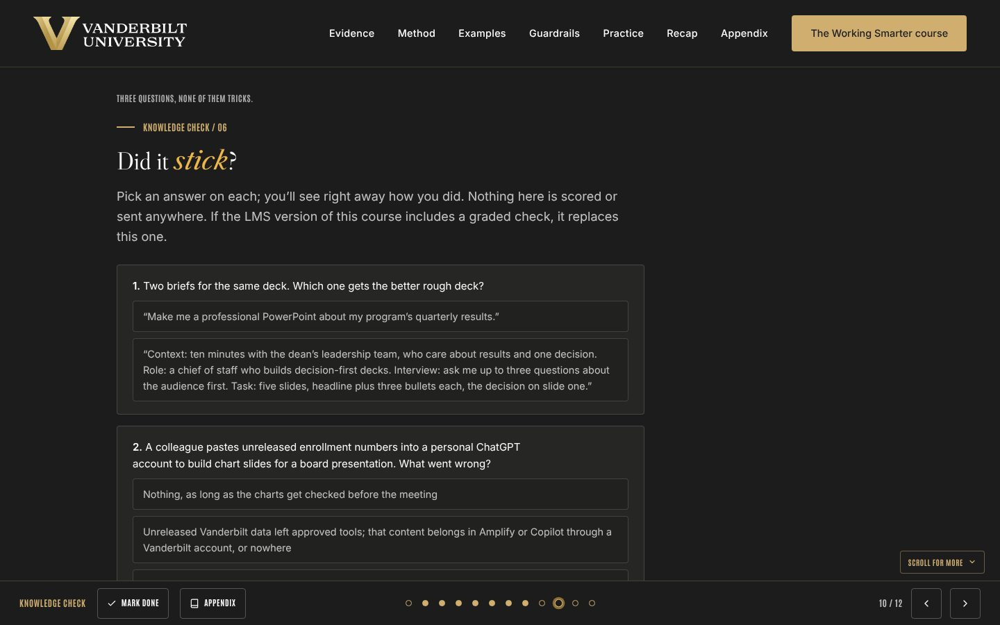
Knowledge check Full 3 min · Core: skip
A room vote that surfaces the three failure modes without feeling like a quiz.
Say
“Three questions, no grades, and nothing leaves the room. Look up here for each one, vote by show of hands, and then somebody tells me why.”
Do
- Project question one and read both briefs aloud; vote by hands.
- Tap the winning answer on screen so the room sees the explanation.
- Repeat for the enrollment-numbers question and the twenty-slide wall of text.
- Where a vote splits, give the two sides thirty seconds to argue before you reveal.
Validate: Near-unanimous hands on question two, the safe-data one. If that one splits, reteach rule one now.
Watch for: People answering on their phones before the vote. Ask them to keep eyes up during each vote and tap their own answers after; the argument is the point, not the tap.
Transition: “Three for three. Last page: what you’re leaving with, and what your next deck looks like.”
Core path: 25-min core: skip the vote. Ask question two only, out loud, on the way to the recap.
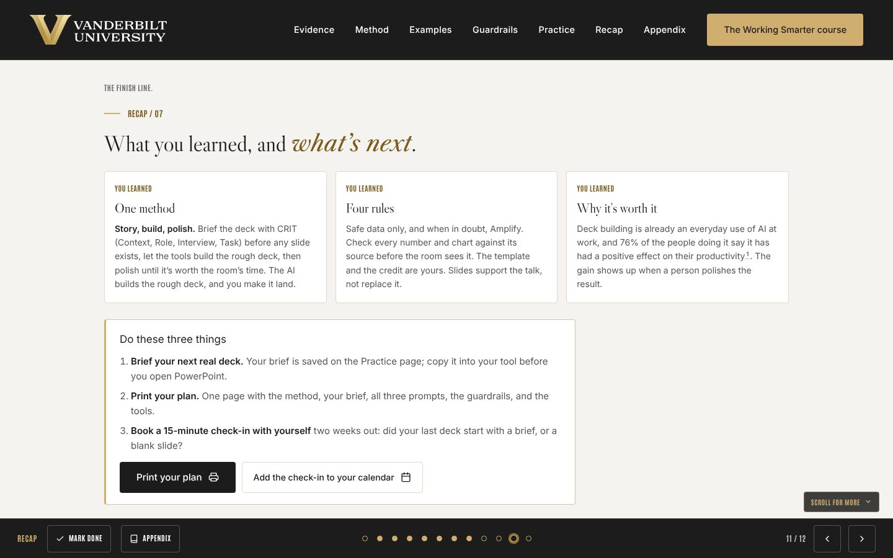
Recap Full 3 min · Core 2
Land the three next actions: the next deck’s brief, the printed plan, the two-week check-in.
Say
“You learned one method, four rules, and the numbers behind both. Three things now. Brief your next real deck; yours is already saved from practice. Take the one-page plan. And book the fifteen-minute check-in two weeks out: did your last deck start with a brief, or a blank slide?”
Do
- Walk the three You-learned cards in one sentence each.
- Point at the print button; hand your printed takeaways to anyone without a device.
- Have everyone tap the calendar button and add the two-week check-in now, not later.
- Name the Oracle Learning shelf, starting with Copilot in PowerPoint: From Prompt to Presentation, and end on time.
Validate: You see phones come out for the calendar file, and the check-in lands on real calendars.
Watch for: Running past the end. If you’re at time, the recap is three sentences and printouts by the door; never trade the ending for the shelf.
Transition: “The appendix has every source, and the course stays online at the same link. Thanks for your time; now go build a deck you didn’t have to start.”
Core path: 25-min core: same three actions, one sentence each. The calendar tap is the one to keep.
Appendix As needed · Core: skip
Reference, not a page you teach. Open it the moment a number gets challenged.
Say
“Every number in the course, cited in full, down to the Microsoft documentation behind the Copilot and Designer claims. It stays online at this link, so nobody needs to copy anything down.”
Do
- Show it for ten seconds so the room knows it exists.
- Return to it live whenever someone questions a statistic; the Appendix button in the bottom bar jumps here from any page.
- Point out the CRIT credit to Geoff Woods and the Working Smarter course link for anyone who wants the full framework.
Validate: You can put the Gallup citation on screen within five seconds of being asked.
Watch for: A methodology debate in the last minutes. One citation on screen, then “happy to dig in after”; protect the ending.
Transition: “That’s the whole course. I’ll stay a few minutes for anything on the parking lot.”
Core path: 25-min core: skip; leave it on screen while people file out if you like.
Generated from the facilitator edition's page scripts and the learner edition on screen. The on-screen facilitator edition lives at ./ alongside this guide.